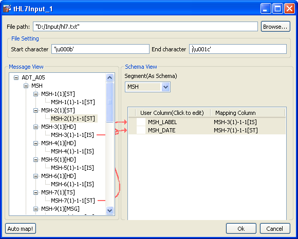
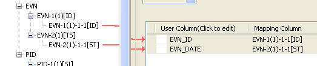
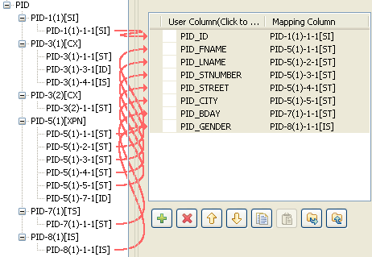

|
Famille de composant |
Business > Healthcare /Unstructured > HL7 | |
|
Fonction |
Lit un fichier de structure HL7 et extrait des données ligne par ligne. | |
|
Objectif |
Ce composant lit un fichier HL7 structuré ou un flux de données ligne par ligne pour le scinder en champs et envoie les champs tels que définis dans le schéma au composant suivant du Job via une connexion Row. | |
|
Basic settings |
Property type |
Peut être Built-in ou Repository. |
|
|
|
Built-in : Propriétés utilisées ponctuellement. |
|
|
|
Repository : Sélectionnez le fichier où sont stockées les propriétés du composant. Les champs suivants sont alors pré-remplis à l’aide des données collectées. |
|
|
|
Cliquez sur cette icône pour ouvrir l’assistant connexion de base de données et enregistrer les paramètres de connexion que vous avez définis dans la vue Basic settings du composant. Pour plus d’informations sur comment définir et stocker des paramètres de connexion de base de données, consultez le Guide Utilisateur de Talend Open Studio. |
|
|
Multi Schemas Editor |
L’éditeur [Multi Schema Editor] vous permet de construire et de configurer le flux de données dans un fichier délimité multi-structure, pour associer un schéma par sortie. |
|
|
Segment Lists |
Connection : Les colonnes sont automatiquement récupérées à partir du fichier d’entrée. Le nom de la colonne est le nom du segment. Column Mapping : Dans ce tableau, le mapping est récupéré de celui que vous avez défini dans l’éditeur. |
|
|
Not Validate HL7 Message |
Cochez cette case si vous ne souhaitez pas valider les messages HL7. |
|
Advanced settings |
Advanced separator (for numbers) |
Cochez cette option pour modifier les séparateurs utilisés pour les nombres : Thousands separator : définissez le séparateur utilisé pour les milliers. Decimal separator : définissez le séparateur utilisé pour les décimaux. |
|
|
Encoding |
Sélectionnez le type d’encodage à partir de la liste ou choisissez l’option Custom pour le définir manuellement. Ce champ doit obligatoirement être renseigné. |
|
|
tStatCatcher Statistics |
Cochez cette case pour collecter les données de log au niveau du composant. |
|
Utilisation |
Généralement utilisé en tant que composant d’entrée. Un composant de sortie est requis. | |
|
Limitation |
n/a | |
Ce scénario décrit un Job de quatre composants, dont le but est de retrouver des informations concernant des patients et des événements à partir d’un fichier HL7.
A partir de la Palette, glissez-déposez un composant tHL7Input, et trois tLogRow dans l’espace de modélisation graphique.
Double-cliquez sur le composant tHL7Input afin d’ouvrir son éditeur.
Dans le champ File path, cliquez sur [Browse...], parcourez votre répertoire, et sélectionnez votre fichier HL7.
Dans la zone File Setting, saisissez le caractère de début de votre segment (Start character), et le caractère de fin de votre segment (End character).
Dans la zone Schema View, dans la liste Segment(As Schema), sélectionnez MSH.
Glissez-déposez les segments MSH-3(1)[HD] et MSH-7(1)[TS] de la zone Message View dans la zone Schema View.
Dans la zone Schema View, dans la liste Segment(As Schema), sélectionnez EVN.
Glissez déposez les segments EVN-1(1)-1-1[ID] et EVN-2(1)-1-1[ST] de la zone Message View dans la zone Schema View.
Dans la zone Schema View, dans la liste Segment(As Schema), sélectionnez PID.
Glissez-déposez les segments suivants de la zone Message View dans la zone Schema View : PID-1(1)-1-1[SI], PID-5(1)-1-1[ST], PID-5(1)-2-1[ST], PID-5(1)-3-1[ST], PID-5(1)-4-1[ST], PID-5(1)-5-1[ST], PID-5(1)-7-1[ID] puis cliquez sur Ok pour fermer l'éditeur.
![[Note]](../images/note.png) | |
S’il est disponible, utilisez le bouton Auto map! situé en bas à gauche de la fenêtre, il permet d’effectuer l’opération de mapping automatiquement. |
Reliez le tHL7Input aux trois tLogRow, en utilisant respectivement les liens MSH, EVN et PID.
Sauvegardez votre Job, et appuyez sur F6 pour l’exécuter.
La console affiche les trois tables des tLogRow, qui retournent différents types d’informations. La première montre l’en-tête du message et sa date. La seconde retourne les informations concernant le patient. La troisième affiche l’ID de l’événement ainsi que sa date.